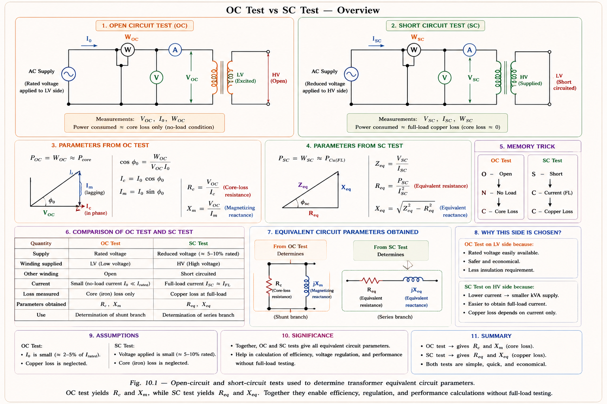
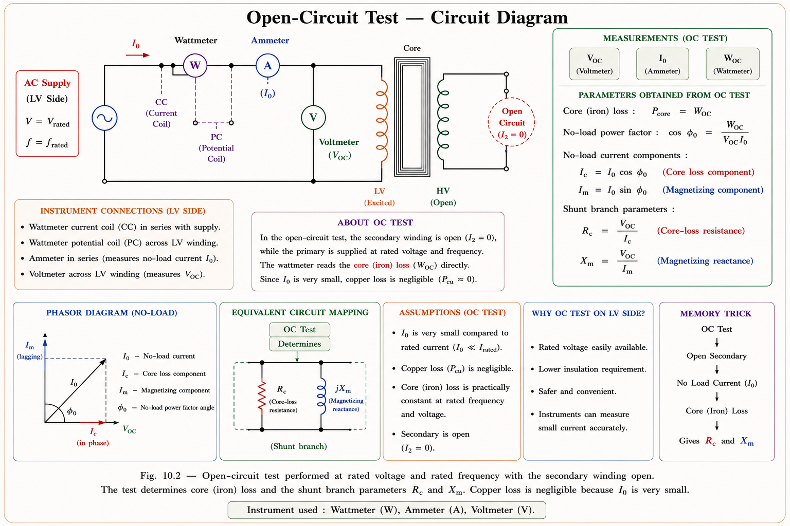
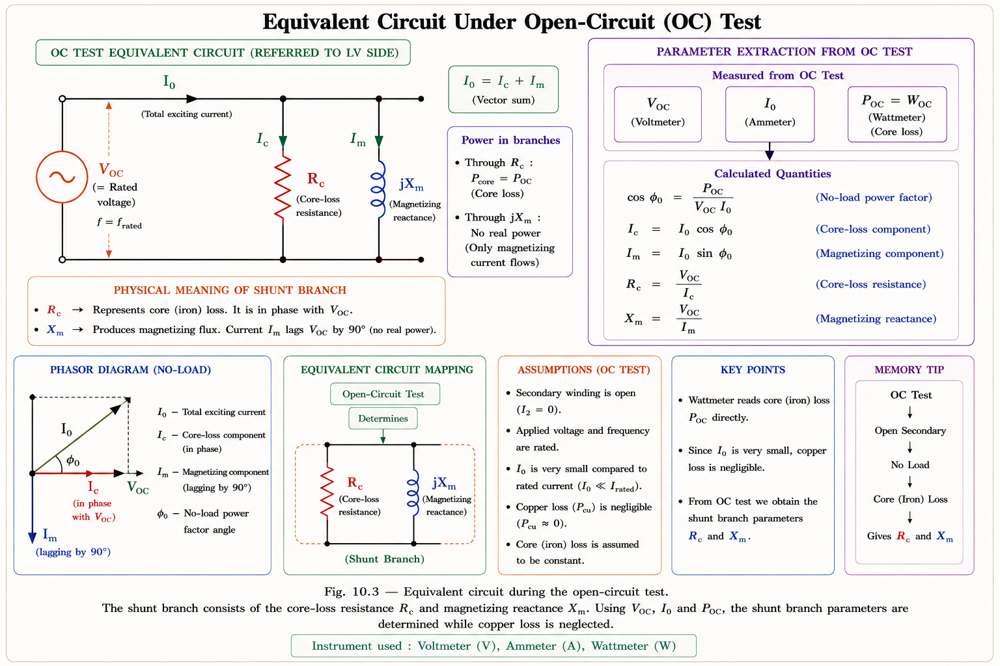
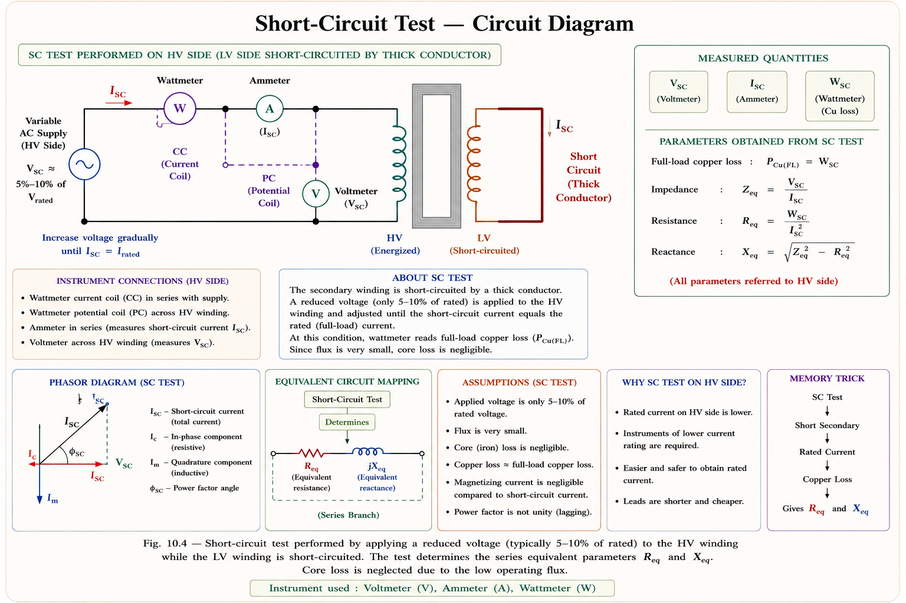
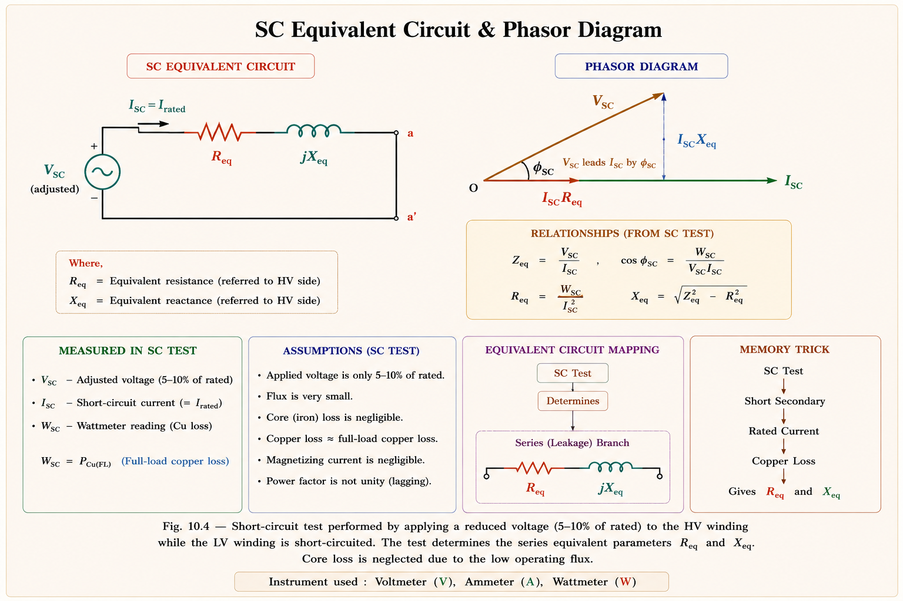
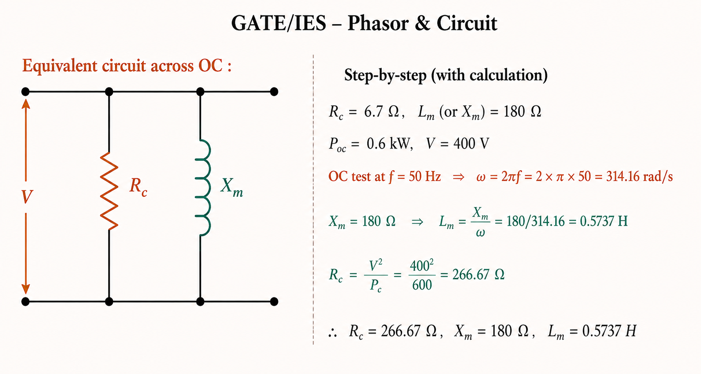
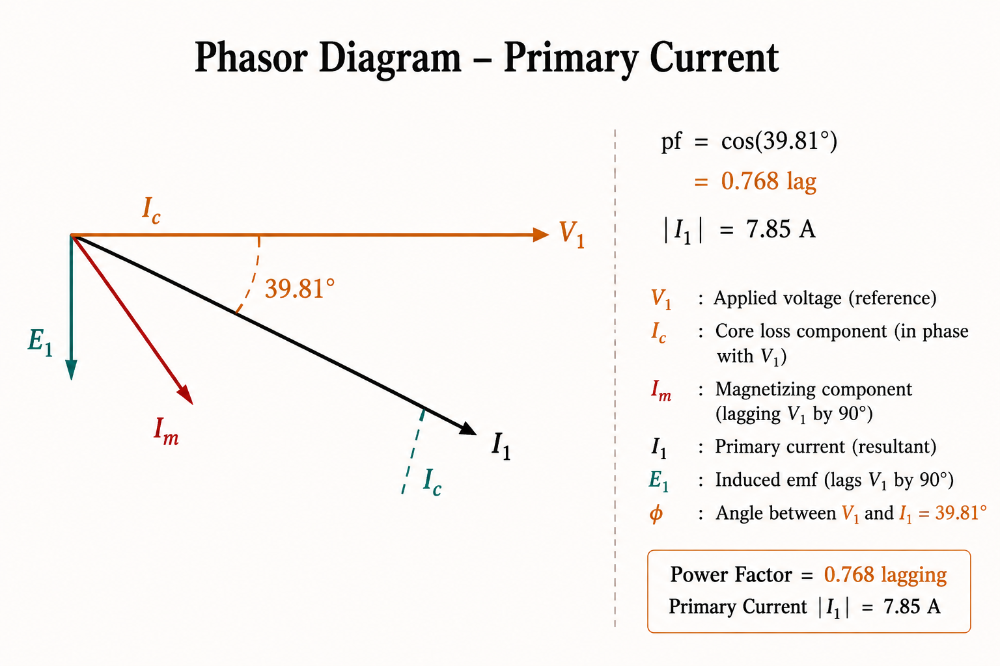

Predicting transformer performance without actual loading — OC test for core loss & shunt branch parameters, SC test for full-load copper loss & series impedance, per-unit interpretation, referred quantities, and complete GATE & IES exam concepts with solved examples.
The purpose of performing the Open Circuit (OC) and Short Circuit (SC) tests is to predict the performance of a transformer without actual loading. This is necessary because:
The aim of these two tests is to predict the performance of transformer without actual loading. OC test gives core loss (\( P_{core} \)) and shunt branch parameters (\( R_c \), \( X_\phi \)). SC test gives full-load copper loss (\( P_{cu} \)) and series branch parameters (\( R_{eq} \), \( X_{eq} \)). Together they fully define the equivalent circuit.[1]

The OC test is performed to determine the core loss of the transformer. This core loss, once determined, is treated as constant despite minor variations in frequency and voltage during actual operation (since transformers operate near rated flux at rated voltage).[1]
The OC test is carried out with instruments placed on the LV (low voltage) side, while the HV side is left open-circuited. The supply is at rated frequency and rated voltage.

There are three strong reasons for placing instruments on the LV side during the OC test:
The no-load current \( I_o \) is limited to about 5% of rated full-load current. Since copper loss ∝ I², the no-load (NL) copper loss = \( I_o^2 \) × \( R_1 \) = (0.05)2 × \( R_1 \) = 0.0025 times the FL copper loss. This is negligibly small.
Also, at such low current, the primary impedance voltage drop is negligible. Therefore, the entire supply voltage appears across the shunt branch (\( R_c \) || \( X_\phi \)), and the wattmeter reading equals core loss directly.
Since the no-load power factor is very low (typically 0.1–0.3), a low power factor wattmeter is used in the OC test. An ordinary wattmeter has poor accuracy at low power factors. The low pf wattmeter has specially designed current and voltage coils calibrated for low pf operation.[1]
Readings:
\( P_{oc} \) = wattmeter (watts)
\( V_{oc} \) = voltmeter = rated voltage (V)
\( I_o \) = ammeter (A) = no-load current
From these:
\[ \cos \phi_o = \frac{P_{oc}}{V_{oc} \times I_o} \quad \text{→ no-load power factor angle } \phi_o \]
\[ R_c = \frac{V_{oc}^2}{P_{oc}} \quad \text{→ core loss resistance (Ω)} \]
\[ X_\phi = \frac{R_c}{\tan(\phi_o)} \quad \text{OR} \quad X_\phi = \frac{V_{oc}}{I_\phi} \]
where:
\( I_c = I_o \times \cos \phi_o \) \(\quad\) (active / core loss component)
\( I_\phi = I_o \times \sin \phi_o \) \(\quad\) (magnetising component, lags V by 90°)
Under the OC test, since the primary impedance drop is negligible (\( I_o \) ≈ 5% of rated current), the equivalent circuit reduces to just the shunt branch \( R_c \) in parallel with j\( X_\phi \) connected across \( V_{oc} \).[1]

If the parameters are required referred to the HV side, use the turns ratio a = \( N_{HV} \)/\( N_{LV} \) = \( V_{HV} \)/\( V_{LV} \):
The SC test is performed to determine the full-load copper loss and the series impedance parameters (\( R_{eq} \), \( X_{eq} \)) of the transformer. The test is conducted with rated current flowing in the windings.[1]
The SC test is carried out with instruments placed on the HV (high voltage) side, while the LV side is short-circuited by a thick conductor. A variable low voltage AC supply is applied on the HV side and increased until rated current flows.

The rated current on the HV side is less than on the LV side (since HV side has fewer amperes for the same kVA). Therefore, economically cheap instruments may be used on the HV side, and it is also safer.
The applied voltage required to circulate full-load current at SC is limited to about 5% to 10% of the rated voltage. At such reduced voltage, the flux in the core is correspondingly reduced (flux ∝ V/f), and the core loss at such low flux is negligible. Also, the exciting current is negligible at such low voltage, so the shunt branch can be ignored entirely.
Since the resistance of transformer windings is not significantly affected by power frequency variation, the SC test need not be carried out strictly at rated frequency. However, it is always recommended to conduct the test at rated frequency for accuracy, since leakage reactance \( X_{eq} \) = ωLeq is frequency-dependent.[1]
Under the SC test, since the applied voltage is low (5–10% rated), core loss and exciting current are negligible. The equivalent circuit reduces to just the series branch \( R_{eq} \) + j\( X_{eq} \) carrying \( I_{sc} \).[1]

Per-unit (pu) values normalise the actual quantities by a base value chosen as the rated quantity. This eliminates the need to refer quantities across the turns ratio and makes comparison between machines easy.[2]
\( Z_{base} \) = \( V_{rated} \) / \( I_{rated} \) = \( V_{rated}^2 \) / \( S_{rated} \) (where \( S_{rated} \) = rated kVA). The same base applies on either side of the transformer if voltage bases are chosen as the rated voltages — turns ratio is automatically accounted for.
\[ R_{pu} = \frac{R_{eq}(\Omega)}{Z_{base}} = \frac{R_{eq}(\Omega)}{V_{rated} / I_{rated}} \]
\[ R_{pu} = \frac{I_{rated} \times R_{eq}(\Omega)}{V_{rated}} \quad \text{→ Full-load resistive drop in pu} \]
\[ R_{pu} = \frac{I_{rated}^2 \times R_{eq}(\Omega)}{S_{rated}} \quad \text{→ Full-load copper loss in pu} \]
Physical meaning:
\( R_{pu} \) = FL resistive drop as fraction of rated voltage
\( R_{pu} \) = FL Cu loss as fraction of rated VA (apparent power)
\[ X_{pu} = \frac{X_{eq}(\Omega)}{Z_{base}} \]
\[ X_{pu} = \frac{I_{rated} \times X_{eq}(\Omega)}{V_{rated}} \quad \text{→ Full-load reactive drop in pu} \]
\[ X_{pu} = \frac{I_{rated}^2 \times X_{eq}(\Omega)}{S_{rated}} \quad \text{→ Full-load reactive loss in pu} \]
\[ Z_{pu} = \frac{Z_{eq}(\Omega)}{Z_{base}} \]
\[ Z_{pu} = \frac{I_{rated} \times Z_{eq}(\Omega)}{V_{rated}} \quad \text{→ Full-load impedance drop in pu} \]
\[ Z_{pu} = \frac{I_{rated}^2 \times Z_{eq}(\Omega)}{S_{rated}} \quad \text{→ Full-load apparent loss in pu} \]
Note: \( Z_{pu} = \frac{V_{sc}}{V_{rated}} \) (directly from SC test voltage ratio — very useful!)
This is also the per-unit short-circuit voltage (\( \varepsilon_z \)).
| Quantity | pu Expression | Physical Meaning | Typical Value |
|---|---|---|---|
| \( R_{pu} \) | \( I_r \)·\( R_{eq} \) / \( V_r \) | FL resistive drop (pu) = FL Cu loss (pu) | 0.01 – 0.03 |
| \( X_{pu} \) | \( I_r \)·\( X_{eq} \) / \( V_r \) | FL reactive drop (pu) = FL reactive loss (pu) | 0.04 – 0.08 |
| \( Z_{pu} \) | \( V_{sc} \) / \( V_{rated} \) | FL impedance drop (pu) = SC voltage (pu) | 0.04 – 0.10 |

Step 1 — Find parameters on LV side:
Given: \( V_{oc} = 120 \) V, \( I_o = 4.2 \) A, \( P_{oc} = 80 \) W
\[ R_c(\text{LV}) = \frac{V_{oc}^2}{P_{oc}} = \frac{120^2}{80} = 180 \, \Omega \]
\[ P_{oc} = V_{oc} \cdot I_o \cdot \cos \phi_o \]
\[ 80 = 120 \times 4.2 \times \cos \phi_o \]
\[ \phi_o = \cos^{-1}\left(\frac{80}{504}\right) = \cos^{-1}(0.1587) = 80.87^\circ \]
\[ X_\phi(\text{LV}) = \frac{R_c}{\tan(\phi_o)} = \frac{180}{\tan(80.87^\circ)} = 28.93 \, \Omega \]
Step 2 — Refer to HV side using turns ratio a = \( V_{HV} \)/\( V_{LV} \) = 450/120 = 3.75:
\[ a = \frac{450}{120} = 3.75 \]
\[ R_c(\text{HV}) = a^2 \times R_c(\text{LV}) = (3.75)^2 \times 180 = 2531 \, \Omega \approx 2.531 \text{ k}\Omega \]
\[ X_\phi(\text{HV}) = a^2 \times X_\phi(\text{LV}) = (3.75)^2 \times 28.93 = 406.83 \, \Omega \]
Step 1 — Parameters on HV side:
Given: \( V_{sc} = 48 \) V, \( I_{sc} = 20.8 \) A, \( P_{sc} = 617 \) W (HV side)
\[ \phi_{sc} = \cos^{-1}\left(\frac{P_{sc}}{V_{sc} \cdot I_{sc}}\right) = \cos^{-1}\left(\frac{617}{48 \times 20.8}\right) = \cos^{-1}\left(\frac{617}{998.4}\right) = 51.83^\circ \]
\[ |Z_{eq}(\text{HV})| = \frac{V_{sc}}{I_{sc}} = \frac{48}{20.8} = 2.308 \, \Omega \]
\[ Z_{eq}(\text{HV}) = 2.308 \angle 51.83^\circ \, \Omega \]
\[ R_{eq}(\text{HV}) = \frac{P_{sc}}{I_{sc}^2} = \frac{617}{20.8^2} = 1.426 \, \Omega \]
\[ X_{eq}(\text{HV}) = \sqrt{|Z_{eq}|^2 - R_{eq}^2} = \sqrt{2.308^2 - 1.426^2} = 1.819 \, \Omega \]
Step 2 — Refer to LV side using a = \( V_{HV} \)/\( V_{LV} \) = 2200/240 = 9.167 ≈ 10 (approx.):
\[ a = \frac{2200}{240} = 9.167 \implies a^2 = 84.03 \]
\[ R_{eq}(\text{LV}) = \frac{R_{eq}(\text{HV})}{a^2} = \frac{1.426}{84.03} = 16.97 \text{ m}\Omega \]
\[ X_{eq}(\text{LV}) = \frac{X_{eq}(\text{HV})}{a^2} = \frac{1.819}{84.03} = 21.65 \text{ m}\Omega \]
\[ Z_{eq}(\text{LV}) = \frac{Z_{eq}(\text{HV})}{a^2} = \frac{2.308}{84.03} = 27.49 \text{ m}\Omega \]
Note: If \( a \approx 10 \) used: \( R_{eq}(\text{LV}) \approx 14.26 \text{ m}\Omega \), \( X_{eq}(\text{LV}) \approx 18.19 \text{ m}\Omega \), \( Z_{eq}(\text{LV}) \approx 23.1 \text{ m}\Omega \).
Part (a) — Exciting current components:
Given: \( I_o = 0.6 \) A, \( P_{oc} = 361 \) W, \( V_{oc} = 2200 \) V (HV side energised)
\[ P_{oc} = V_{oc} \cdot I_o \cdot \cos \phi_o \]
\[ 361 = 2200 \times 0.6 \times \cos \phi_o \implies \phi_o = \cos^{-1}\left(\frac{361}{1320}\right) = 74.13^\circ \]
\[ I_c = I_o \cdot \cos \phi_o = 0.6 \times 0.2735 = 0.164 \text{ A} \quad \text{(core loss component, in phase with V)} \]
\[ I_\phi = I_o \cdot \sin \phi_o = 0.6 \times \sin(74.13^\circ) = 0.577 \text{ A} \quad \text{(magnetising component, lags V by } 90^\circ\text{)} \]
Part (b) — Primary current and power factor:
Load side: \( I_2 = 60 \) A at 0.8 pf lag on LV side (240 V).
Let \( V_1 = V_2' = 2200 \angle 0^\circ \) V (reference phasor).
Turns ratio: \( a = \frac{2200}{240} = 9.167 \)
Load current referred to HV: \[ I_2' = \frac{I_2}{a} = \frac{60}{9.167} = 6.545 \text{ A at } 0.8 \text{ pf lag} \]
\[ I_2' = 6.545 \angle -36.87^\circ = 6.545(0.8 - j0.6) = (5.236 - j3.927) \text{ A} \]
Exciting current: \[ I_o = I_c - jI_\phi = (0.164 - j0.577) \text{ A} \]
Primary current: \[ I_1 = I_2' + I_o = (5.236 - j3.927) + (0.164 - j0.577) = (5.400 - j4.504) \text{ A} \]
\[ |I_1| = \sqrt{5.400^2 + 4.504^2} = 7.032 \text{ A} \]
\[ \text{pf} = \cos(\tan^{-1}(4.504 / 5.400)) = \cos(39.81^\circ) = 0.768 \text{ lagging} \]

Instruments on LV side. HV open. Supply = \( V_{rated} \) at rated freq. Wattmeter → \( P_{core} \). Low pf wattmeter required. NL Cu loss ignored (\( I_o \) ≈ 5% of \( I_{FL} \)).
Instruments on HV side. LV short-circuited. \( V_{sc} \) ≈ 5–10% rated. Wattmeter → \( P_{cu(FL)} \). Core loss ignored. Normal wattmeter sufficient (pf ≈ 0.6–0.8).
OC → \( R_c \) = \( V_{oc}^2 \)/\( P_{oc} \); \( X_\phi \) = \( R_c \)/tan \( \phi_o \). SC → \( Z_{eq} \) = \( V_{sc} \)/\( I_{sc} \); \( R_{eq} \) = \( P_{sc} \)/\( I_{sc}^2 \); \( X_{eq} \) = √(Z²–R²).
\( Z_{pu} \) = \( V_{sc} \)/\( V_{rated} \). \( R_{pu} \) = FL Cu loss (pu). Typical: \( Z_{pu} \) = 4–10%, \( R_{pu} \) = 1–3%. Same pu value from either side.
OC must be at rated frequency (core loss is frequency-dependent). SC strictly should be at rated freq. (\( X_{eq} \) = ωL is frequency-dependent), though \( R_{eq} \) is not.
Impedance scales as \( a^2 \). Shunt branch: high values on HV side. Series branch: also referred by \( a^2 \). Turns ratio a = \( V_{HV} \)/\( V_{LV} \) = \( N_{HV} \)/\( N_{LV} \).
The open-circuit and short-circuit tests of a single-phase transformer are used to find the parameters of its equivalent circuit. Which test is used to find which parameter set?
Answer: (C) — OC test gives shunt branch parameters (\( R_c \), \( X_\phi \)) since the series impedance drop is negligible. SC test gives series branch parameters (\( R_{eq} \), \( X_{eq} \)) since shunt branch is negligible at low flux.
A transformer has \( V_{sc} \) = 220 V when its rated voltage is 11 kV (HV side). What is the per-unit impedance?
\[ Z_{pu} = \frac{V_{sc}}{V_{rated}} = \frac{220}{11000} = 0.02 \text{ pu} = 2\% \]
This means at full load, the voltage drop across \( Z_{eq} \) is 2% of rated voltage.
Also: short-circuit current = \( \frac{I_{rated}}{Z_{pu}} = 50 \times I_{rated} \) (since \( 1/0.02 = 50 \)).
Question: Explain why a low power factor wattmeter is necessary in the open-circuit test of a transformer.
Answer: During the OC test, the transformer operates at no load. The no-load current \( I_o \) consists mainly of the magnetising component \( I_\phi \) (≈ 95–98% of \( I_o \)), which lags the voltage by nearly 90°. The core-loss component \( I_c \) is small. Therefore the no-load power factor cos \( \phi_o \) is typically 0.10 to 0.25.
An ordinary wattmeter has its current coil and pressure coil designed for power factors near unity. At very low power factors, the reading becomes a small difference between two large quantities, leading to large percentage errors. A low power factor wattmeter has its pressure coil designed with very low inductance so that it can accurately measure small phase differences, giving reliable readings at low power factors.
Question: In the SC test of a transformer, why is the LV side short-circuited by a thick conductor while instruments are placed on the HV side?
Answer: The rated current on the LV side is a times higher than the rated current on the HV side (where a = \( V_{HV} \)/\( V_{LV} \) > 1). For example, a 2200/240 V transformer has LV current nearly 9.2 times the HV current. If the LV side is short-circuited, this large current must flow through the short-circuit link, requiring a thick (low-resistance) conductor to prevent excessive voltage drop and heating.
Instruments are placed on the HV side because HV rated current is smaller, so cheaper, lower-rated instruments can be used, and safety is better at the reduced test voltage (5–10% of rated HV). The short-circuit copper link on LV side is simply a thick bar or link — no instrument needed there.
The core loss (iron loss) of a transformer is the sum of hysteresis loss (∝ f · Bm1.6) and eddy current loss (∝ f² · Bm²). In operation, a transformer is always connected to rated voltage at (approximately) rated frequency. Since V = 4.44 f N Φm, at constant V and f, the flux Bm remains constant. Therefore, both hysteresis and eddy current loss remain essentially constant regardless of load, and the OC test value is a good estimate for all loading conditions.
This is why core loss is called a constant loss and copper loss (∝ I²R) is called a variable loss.
Have a doubt about OC/SC tests, pu system, or transformer parameters? Ask below:
| Aspect | Open Circuit Test | Short Circuit Test |
|---|---|---|
| Side with instruments | LV side | HV side |
| Other side condition | HV open-circuited | LV short-circuited (thick cond.) |
| Applied voltage | Rated voltage (\( V_{rated} \)) | Reduced (5–10% of rated) |
| Current | No-load current \( I_o \) (≈ 3–5% of \( I_{FL} \)) | Rated full-load current \( I_{FL} \) |
| Power measured | Core loss \( P_{core} \) | FL Copper loss \( P_{cu} \) |
| Parameters found | \( R_c \), \( X_\phi \) (shunt branch) | \( R_{eq} \), \( X_{eq} \) (series branch) |
| Wattmeter type | Low pf wattmeter (pf ≈ 0.1–0.3) | Normal wattmeter (pf ≈ 0.6–0.8) |
| What is neglected? | NL copper loss (\( I_o^2 \)\( R_1 \) ≈ 0) | Core loss (\( V_{sc} \) ≈ 5–10% rated → low flux) |
| Frequency requirement | Must be at rated frequency | Strictly at rated freq. (recommended) |
| Loss type identified | Constant loss (independent of load) | Variable loss (∝ load current²) |